01 · Teremor — habitat tempéré / Sylverive — cité et commerce / Igea — habitat et réserves / Sarak — bassins et étapes
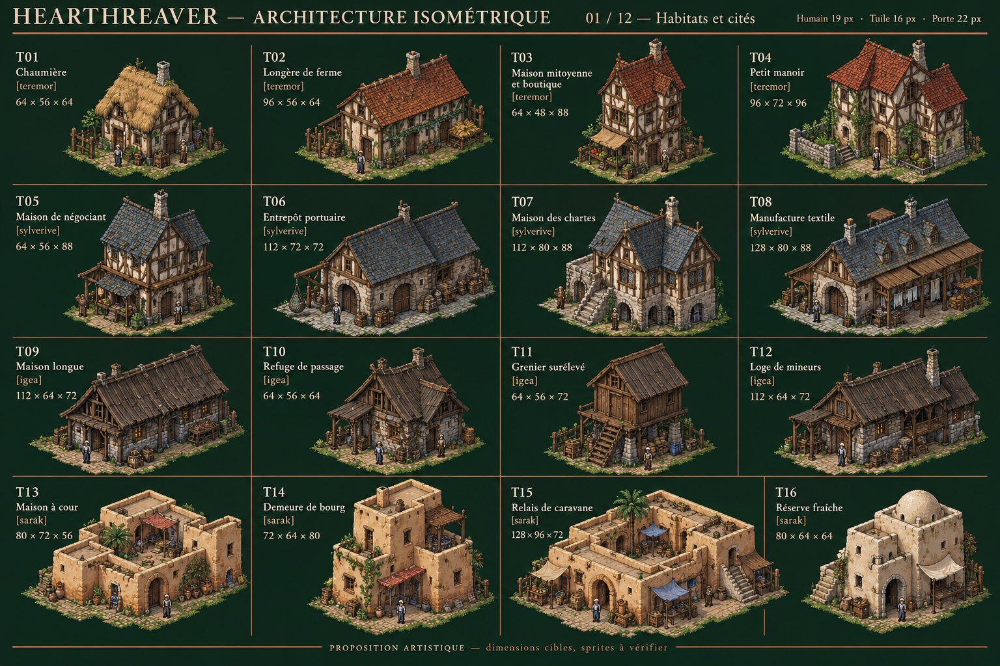
Télécharger la planche PNG · 16 références attendues
Identifiants et dimensions cibles
| ID | Fonction | Famille | L × P × H natives |
|---|
| T01 | Chaumière | teremor | 64 × 56 × 64 |
| T02 | Longère de ferme | teremor | 96 × 56 × 64 |
| T03 | Maison mitoyenne et boutique | teremor | 64 × 48 × 88 |
| T04 | Petit manoir | teremor | 96 × 72 × 96 |
| T05 | Maison de négociant | sylverive | 64 × 56 × 88 |
| T06 | Entrepôt portuaire | sylverive | 112 × 72 × 72 |
| T07 | Maison des chartes | sylverive | 112 × 80 × 88 |
| T08 | Manufacture textile | sylverive | 128 × 80 × 88 |
| T09 | Maison longue | igea | 112 × 64 × 72 |
| T10 | Refuge de passage | igea | 64 × 56 × 64 |
| T11 | Grenier surélevé | igea | 64 × 56 × 72 |
| T12 | Loge de mineurs | igea | 112 × 64 × 72 |
| T13 | Maison à cour | sarak | 80 × 72 × 56 |
| T14 | Demeure de bourg | sarak | 72 × 64 × 80 |
| T15 | Relais de caravane | sarak | 128 × 96 × 72 |
| T16 | Réserve fraîche | sarak | 80 × 64 × 64 |
02 · Varan — habitats humides / Tagon — côtes et arrière-pays / Dépendances rurales / Marchés et relais
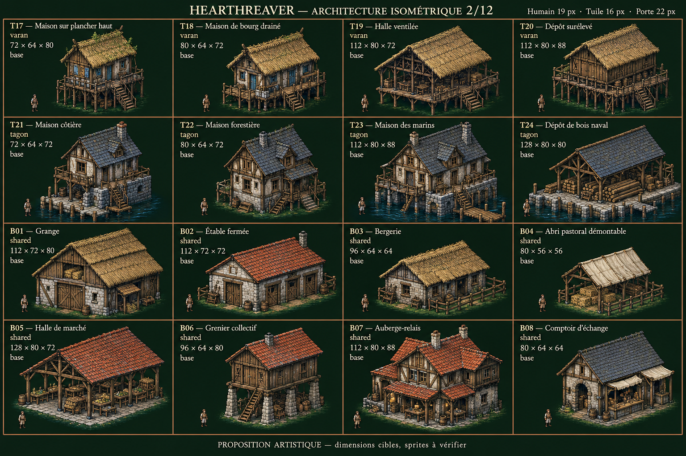
Télécharger la planche PNG · 16 références attendues
Identifiants et dimensions cibles
| ID | Fonction | Famille | L × P × H natives |
|---|
| T17 | Maison sur plancher haut | varan | 72 × 64 × 80 |
| T18 | Maison de bourg drainé | varan | 80 × 64 × 72 |
| T19 | Halle ventilée | varan | 112 × 80 × 72 |
| T20 | Dépôt surélevé | varan | 112 × 80 × 88 |
| T21 | Maison côtière | tagon | 72 × 64 × 72 |
| T22 | Maison forestière | tagon | 80 × 64 × 72 |
| T23 | Maison des marins | tagon | 112 × 80 × 88 |
| T24 | Dépôt de bois naval | tagon | 128 × 80 × 80 |
| B01 | Grange | shared | 112 × 72 × 80 |
| B02 | Étable fermée | shared | 112 × 72 × 72 |
| B03 | Bergerie | shared | 96 × 64 × 64 |
| B04 | Abri pastoral démontable | shared | 80 × 56 × 56 |
| B05 | Halle de marché | shared | 128 × 80 × 72 |
| B06 | Grenier collectif | shared | 96 × 64 × 80 |
| B07 | Auberge-relais | shared | 112 × 80 × 88 |
| B08 | Comptoir d’échange | shared | 80 × 64 × 64 |
03 · Ateliers à nuisances / Transformation alimentaire / Textile et transformations / Vie publique et mémoire
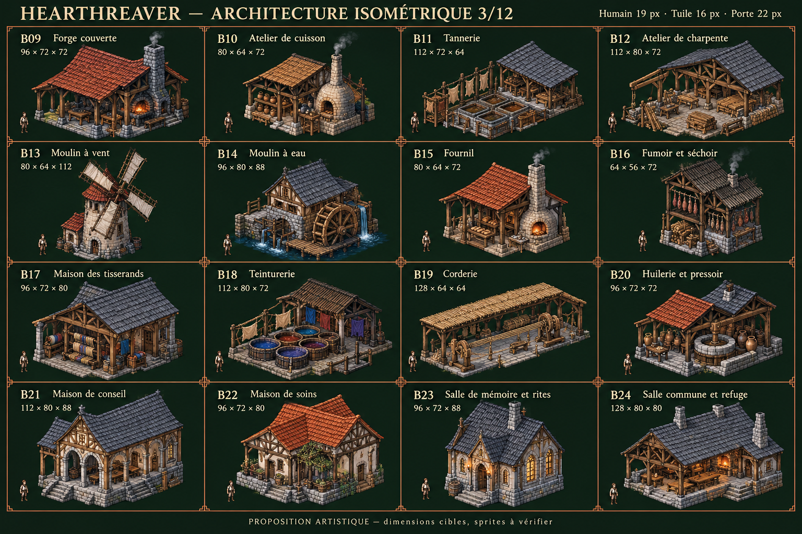
Télécharger la planche PNG · 16 références attendues
Identifiants et dimensions cibles
| ID | Fonction | Famille | L × P × H natives |
|---|
| B09 | Forge couverte | shared | 96 × 72 × 72 |
| B10 | Atelier de cuisson | shared | 80 × 64 × 72 |
| B11 | Tannerie | shared | 112 × 72 × 64 |
| B12 | Atelier de charpente | shared | 112 × 80 × 72 |
| B13 | Moulin à vent | shared | 80 × 64 × 112 |
| B14 | Moulin à eau | shared | 96 × 80 × 88 |
| B15 | Fournil | shared | 80 × 64 × 72 |
| B16 | Fumoir et séchoir | shared | 64 × 56 × 72 |
| B17 | Maison des tisserands | shared | 96 × 72 × 80 |
| B18 | Teinturerie | shared | 112 × 80 × 72 |
| B19 | Corderie | shared | 128 × 64 × 64 |
| B20 | Huilerie et pressoir | shared | 96 × 72 × 72 |
| B21 | Maison de conseil | shared | 112 × 80 × 88 |
| B22 | Maison de soins | shared | 96 × 72 × 80 |
| B23 | Salle de mémoire et rites | shared | 96 × 72 × 88 |
| B24 | Salle commune et refuge | shared | 128 × 80 × 80 |
04 · Garde et défense habitée / Tours et portes d’enceinte / Dépendances des districts / Structure et enveloppes
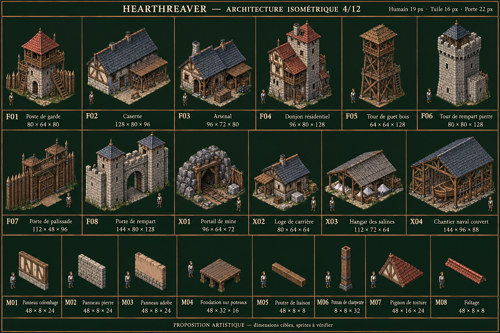
Télécharger la planche PNG · 20 références attendues
Identifiants et dimensions cibles
| ID | Fonction | Famille | L × P × H natives |
|---|
| F01 | Poste de garde | shared | 80 × 64 × 80 |
| F02 | Caserne | shared | 128 × 80 × 96 |
| F03 | Arsenal | shared | 96 × 72 × 80 |
| F04 | Donjon résidentiel | shared | 96 × 80 × 128 |
| F05 | Tour de guet bois | shared | 64 × 64 × 128 |
| F06 | Tour de rempart pierre | shared | 80 × 80 × 128 |
| F07 | Porte de palissade | shared | 112 × 48 × 96 |
| F08 | Porte de rempart | shared | 144 × 80 × 128 |
| X01 | Portail de mine | shared | 96 × 64 × 72 |
| X02 | Loge de carrière | shared | 80 × 64 × 64 |
| X03 | Hangar des salines | shared | 112 × 72 × 64 |
| X04 | Chantier naval couvert | shared | 144 × 96 × 88 |
| M01 | Panneau colombage | shared | 48 × 8 × 24 |
| M02 | Panneau pierre | shared | 48 × 8 × 24 |
| M03 | Panneau adobe | shared | 48 × 8 × 24 |
| M04 | Fondation sur poteaux | shared | 48 × 32 × 16 |
| M05 | Poutre de liaison | shared | 48 × 8 × 8 |
| M06 | Poteau de charpente | shared | 8 × 8 × 32 |
| M07 | Pignon de toiture | shared | 48 × 16 × 24 |
| M08 | Faîtage | shared | 48 × 8 × 8 |
05 · Murs et chemins de ronde / Portes, fenêtres et protection / Ponts et accès portuaires / Eau et salubrité — structures seules
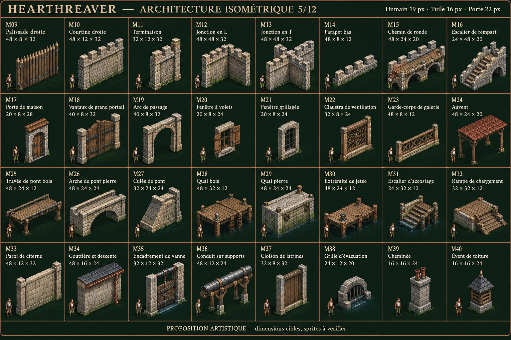
Télécharger la planche PNG · 32 références attendues
Identifiants et dimensions cibles
| ID | Fonction | Famille | L × P × H natives |
|---|
| M09 | Palissade droite | shared | 48 × 8 × 32 |
| M10 | Courtine droite | shared | 48 × 12 × 32 |
| M11 | Terminaison | shared | 32 × 12 × 32 |
| M12 | Jonction en L | shared | 48 × 48 × 32 |
| M13 | Jonction en T | shared | 48 × 48 × 32 |
| M14 | Parapet bas | shared | 48 × 8 × 12 |
| M15 | Chemin de ronde | shared | 48 × 24 × 20 |
| M16 | Escalier de rempart | shared | 24 × 48 × 20 |
| M17 | Porte de maison | shared | 20 × 8 × 28 |
| M18 | Vantaux de grand portail | shared | 40 × 8 × 32 |
| M19 | Arc de passage | shared | 40 × 8 × 32 |
| M20 | Fenêtre à volets | shared | 20 × 8 × 24 |
| M21 | Fenêtre grillagée | shared | 20 × 8 × 24 |
| M22 | Claustra de ventilation | shared | 32 × 8 × 24 |
| M23 | Garde-corps de galerie | shared | 48 × 8 × 12 |
| M24 | Auvent | shared | 48 × 24 × 20 |
| M25 | Travée de pont bois | shared | 48 × 24 × 12 |
| M26 | Arche de pont pierre | shared | 48 × 24 × 24 |
| M27 | Culée de pont | shared | 32 × 24 × 24 |
| M28 | Quai bois | shared | 48 × 32 × 12 |
| M29 | Quai pierre | shared | 48 × 24 × 24 |
| M30 | Extrémité de jetée | shared | 48 × 24 × 12 |
| M31 | Escalier d’accostage | shared | 24 × 32 × 12 |
| M32 | Rampe de chargement | shared | 32 × 32 × 12 |
| M33 | Paroi de citerne | shared | 48 × 12 × 32 |
| M34 | Gouttière et descente | shared | 48 × 16 × 24 |
| M35 | Encadrement de vanne | shared | 32 × 12 × 32 |
| M36 | Conduit sur supports | shared | 48 × 12 × 24 |
| M37 | Cloison de latrines | shared | 32 × 8 × 32 |
| M38 | Grille d’évacuation | shared | 24 × 12 × 20 |
| M39 | Cheminée | shared | 16 × 16 × 24 |
| M40 | Évent de toiture | shared | 16 × 16 × 24 |
06 · Couvertures et assemblages / Igea — neige saisonnière / Teremor — variantes d’habitation / Sylverive — logements de cité
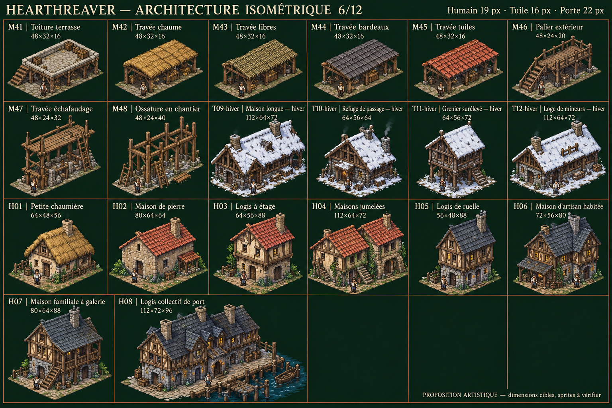
Télécharger la planche PNG · 20 références attendues
Identifiants et dimensions cibles
| ID | Fonction | Famille | L × P × H natives |
|---|
| M41 | Toiture terrasse | shared | 48 × 32 × 16 |
| M42 | Travée chaume | shared | 48 × 32 × 16 |
| M43 | Travée fibres | shared | 48 × 32 × 16 |
| M44 | Travée bardeaux | shared | 48 × 32 × 16 |
| M45 | Travée tuiles | shared | 48 × 32 × 16 |
| M46 | Palier extérieur | shared | 48 × 24 × 20 |
| M47 | Travée échafaudage | shared | 48 × 24 × 32 |
| M48 | Ossature en chantier | shared | 48 × 24 × 40 |
| T09-hiver | Maison longue — hiver | igea | 112 × 64 × 72 |
| T10-hiver | Refuge de passage — hiver | igea | 64 × 56 × 64 |
| T11-hiver | Grenier surélevé — hiver | igea | 64 × 56 × 72 |
| T12-hiver | Loge de mineurs — hiver | igea | 112 × 64 × 72 |
| H01 | Petite chaumière | teremor | 64 × 48 × 56 |
| H02 | Maison de pierre | teremor | 80 × 64 × 64 |
| H03 | Logis à étage | teremor | 64 × 56 × 88 |
| H04 | Maisons jumelées | teremor | 112 × 64 × 72 |
| H05 | Logis de ruelle | sylverive | 56 × 48 × 88 |
| H06 | Maison d’artisan habitée | sylverive | 72 × 56 × 80 |
| H07 | Maison familiale à galerie | sylverive | 80 × 64 × 88 |
| H08 | Logis collectif de port | sylverive | 112 × 72 × 96 |
07 · Igea — maisons de vallée / Sarak — variantes de maisons / Varan — maisons ventilées / Tagon — maisons côtières et forestières
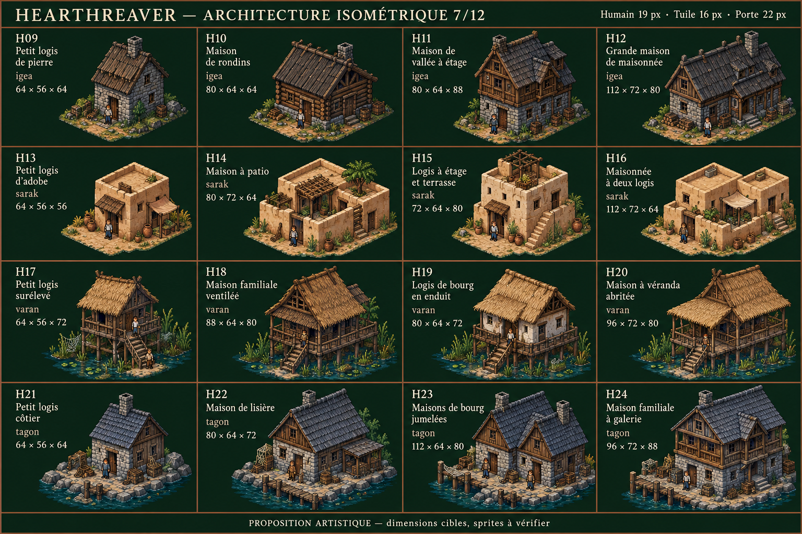
Télécharger la planche PNG · 16 références attendues
Identifiants et dimensions cibles
| ID | Fonction | Famille | L × P × H natives |
|---|
| H09 | Petit logis de pierre | igea | 64 × 56 × 64 |
| H10 | Maison de rondins | igea | 80 × 64 × 64 |
| H11 | Maison de vallée à étage | igea | 80 × 64 × 88 |
| H12 | Grande maison de maisonnée | igea | 112 × 72 × 80 |
| H13 | Petit logis d’adobe | sarak | 64 × 56 × 56 |
| H14 | Maison à patio | sarak | 80 × 72 × 64 |
| H15 | Logis à étage et terrasse | sarak | 72 × 64 × 80 |
| H16 | Maisonnée à deux logis | sarak | 112 × 72 × 64 |
| H17 | Petit logis surélevé | varan | 64 × 56 × 72 |
| H18 | Maison familiale ventilée | varan | 88 × 64 × 80 |
| H19 | Logis de bourg en enduit | varan | 80 × 64 × 72 |
| H20 | Maison à véranda abritée | varan | 96 × 72 × 80 |
| H21 | Petit logis côtier | tagon | 64 × 56 × 64 |
| H22 | Maison de lisière | tagon | 80 × 64 × 72 |
| H23 | Maisons de bourg jumelées | tagon | 112 × 64 × 80 |
| H24 | Maison familiale à galerie | tagon | 96 × 72 × 88 |
08 · Enceinte haute de village — bois / Enceinte haute de bourg — pierre / Courtine haute de château / Enceintes hautes — portes et tours
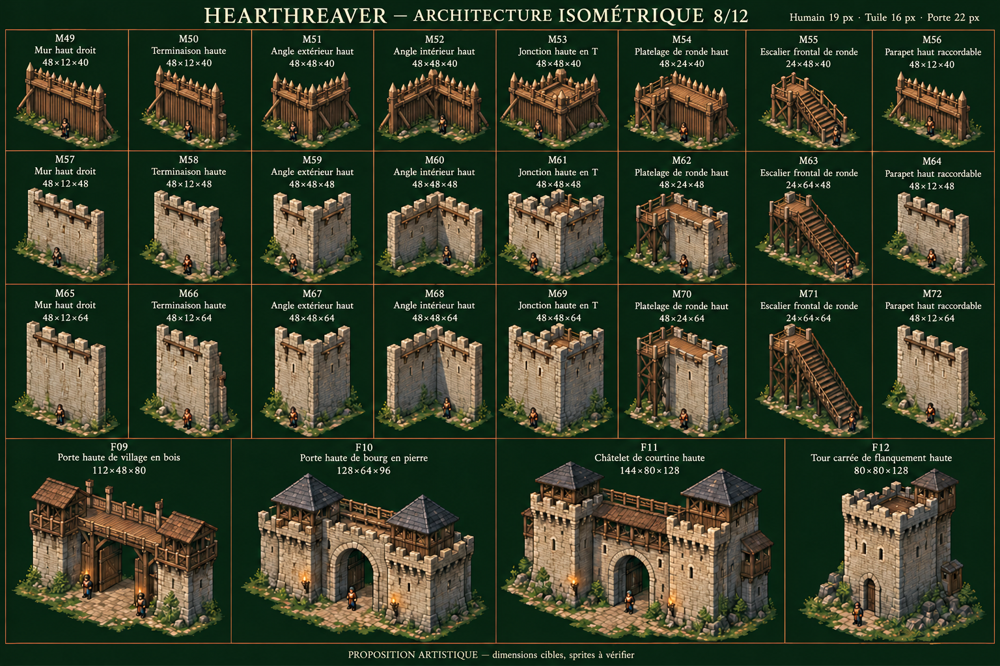
Télécharger la planche PNG · 28 références attendues
Identifiants et dimensions cibles
| ID | Fonction | Famille | L × P × H natives |
|---|
| M49 | Mur haut droit | shared | 48 × 12 × 40 |
| M50 | Terminaison haute | shared | 48 × 12 × 40 |
| M51 | Angle extérieur haut | shared | 48 × 48 × 40 |
| M52 | Angle intérieur haut | shared | 48 × 48 × 40 |
| M53 | Jonction haute en T | shared | 48 × 48 × 40 |
| M54 | Platelage de ronde haut | shared | 48 × 24 × 40 |
| M55 | Escalier frontal de ronde | shared | 24 × 48 × 40 |
| M56 | Parapet haut raccordable | shared | 48 × 12 × 40 |
| M57 | Mur haut droit | shared | 48 × 12 × 48 |
| M58 | Terminaison haute | shared | 48 × 12 × 48 |
| M59 | Angle extérieur haut | shared | 48 × 48 × 48 |
| M60 | Angle intérieur haut | shared | 48 × 48 × 48 |
| M61 | Jonction haute en T | shared | 48 × 48 × 48 |
| M62 | Platelage de ronde haut | shared | 48 × 24 × 48 |
| M63 | Escalier frontal de ronde | shared | 24 × 64 × 48 |
| M64 | Parapet haut raccordable | shared | 48 × 12 × 48 |
| M65 | Mur haut droit | shared | 48 × 12 × 64 |
| M66 | Terminaison haute | shared | 48 × 12 × 64 |
| M67 | Angle extérieur haut | shared | 48 × 48 × 64 |
| M68 | Angle intérieur haut | shared | 48 × 48 × 64 |
| M69 | Jonction haute en T | shared | 48 × 48 × 64 |
| M70 | Platelage de ronde haut | shared | 48 × 24 × 64 |
| M71 | Escalier frontal de ronde | shared | 24 × 64 × 64 |
| M72 | Parapet haut raccordable | shared | 48 × 12 × 64 |
| F09 | Porte haute de village en bois | shared | 112 × 48 × 80 |
| F10 | Porte haute de bourg en pierre | shared | 128 × 64 × 96 |
| F11 | Châtelet de courtine haute | shared | 144 × 80 × 128 |
| F12 | Tour carrée de flanquement haute | shared | 80 × 80 × 128 |
09 · Igea — variantes d’habitation sous neige / Teremor — maisons civiles / Teremor — hauts remparts / Sylverive — maisons civiles
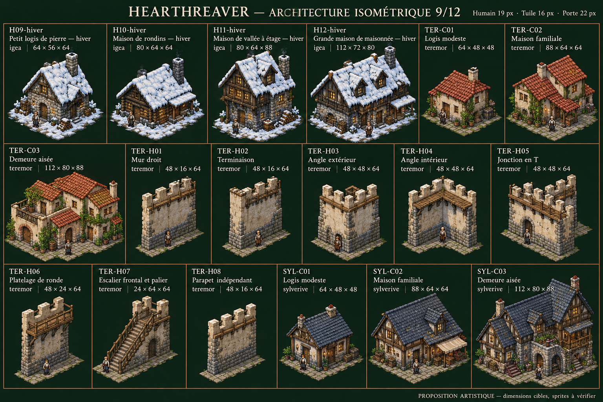
Télécharger la planche PNG · 18 références attendues
Identifiants et dimensions cibles
| ID | Fonction | Famille | L × P × H natives |
|---|
| H09-hiver | Petit logis de pierre — hiver | igea | 64 × 56 × 64 |
| H10-hiver | Maison de rondins — hiver | igea | 80 × 64 × 64 |
| H11-hiver | Maison de vallée à étage — hiver | igea | 80 × 64 × 88 |
| H12-hiver | Grande maison de maisonnée — hiver | igea | 112 × 72 × 80 |
| TER-C01 | Logis modeste | teremor | 64 × 48 × 48 |
| TER-C02 | Maison familiale | teremor | 88 × 64 × 64 |
| TER-C03 | Demeure aisée | teremor | 112 × 80 × 88 |
| TER-H01 | Mur droit | teremor | 48 × 16 × 64 |
| TER-H02 | Terminaison | teremor | 48 × 16 × 64 |
| TER-H03 | Angle extérieur | teremor | 48 × 48 × 64 |
| TER-H04 | Angle intérieur | teremor | 48 × 48 × 64 |
| TER-H05 | Jonction en T | teremor | 48 × 48 × 64 |
| TER-H06 | Platelage de ronde | teremor | 48 × 24 × 64 |
| TER-H07 | Escalier frontal et palier | teremor | 24 × 64 × 64 |
| TER-H08 | Parapet indépendant | teremor | 48 × 16 × 64 |
| SYL-C01 | Logis modeste | sylverive | 64 × 48 × 48 |
| SYL-C02 | Maison familiale | sylverive | 88 × 64 × 64 |
| SYL-C03 | Demeure aisée | sylverive | 112 × 80 × 88 |
10 · Sylverive — hauts remparts / Igea — maisons civiles / Igea — hauts remparts / Sarak — maisons civiles
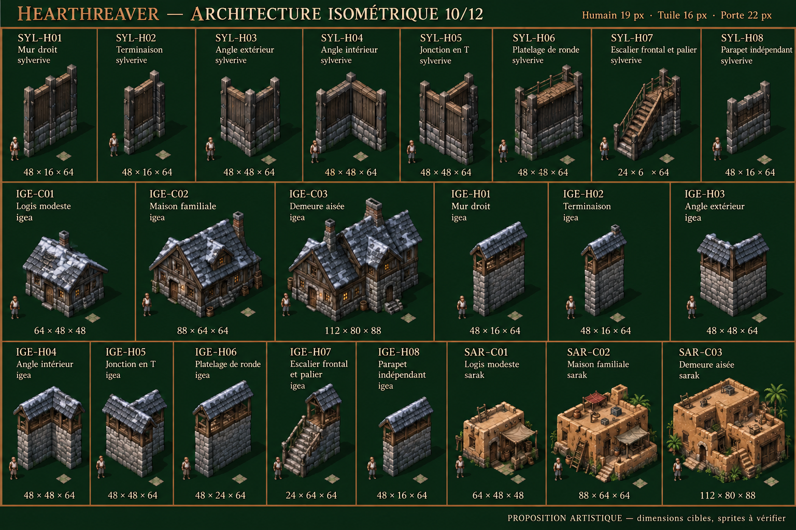
Télécharger la planche PNG · 22 références attendues
Identifiants et dimensions cibles
| ID | Fonction | Famille | L × P × H natives |
|---|
| SYL-H01 | Mur droit | sylverive | 48 × 16 × 64 |
| SYL-H02 | Terminaison | sylverive | 48 × 16 × 64 |
| SYL-H03 | Angle extérieur | sylverive | 48 × 48 × 64 |
| SYL-H04 | Angle intérieur | sylverive | 48 × 48 × 64 |
| SYL-H05 | Jonction en T | sylverive | 48 × 48 × 64 |
| SYL-H06 | Platelage de ronde | sylverive | 48 × 24 × 64 |
| SYL-H07 | Escalier frontal et palier | sylverive | 24 × 64 × 64 |
| SYL-H08 | Parapet indépendant | sylverive | 48 × 16 × 64 |
| IGE-C01 | Logis modeste | igea | 64 × 48 × 48 |
| IGE-C02 | Maison familiale | igea | 88 × 64 × 64 |
| IGE-C03 | Demeure aisée | igea | 112 × 80 × 88 |
| IGE-H01 | Mur droit | igea | 48 × 16 × 64 |
| IGE-H02 | Terminaison | igea | 48 × 16 × 64 |
| IGE-H03 | Angle extérieur | igea | 48 × 48 × 64 |
| IGE-H04 | Angle intérieur | igea | 48 × 48 × 64 |
| IGE-H05 | Jonction en T | igea | 48 × 48 × 64 |
| IGE-H06 | Platelage de ronde | igea | 48 × 24 × 64 |
| IGE-H07 | Escalier frontal et palier | igea | 24 × 64 × 64 |
| IGE-H08 | Parapet indépendant | igea | 48 × 16 × 64 |
| SAR-C01 | Logis modeste | sarak | 64 × 48 × 48 |
| SAR-C02 | Maison familiale | sarak | 88 × 64 × 64 |
| SAR-C03 | Demeure aisée | sarak | 112 × 80 × 88 |
11 · Sarak — hauts remparts / Varan — maisons civiles / Varan — hauts remparts / Tagon — maisons civiles
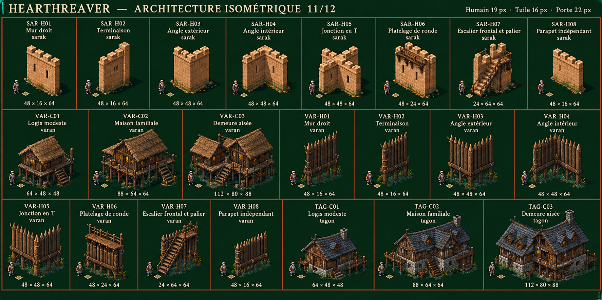
Télécharger la planche PNG · 22 références attendues
Identifiants et dimensions cibles
| ID | Fonction | Famille | L × P × H natives |
|---|
| SAR-H01 | Mur droit | sarak | 48 × 16 × 64 |
| SAR-H02 | Terminaison | sarak | 48 × 16 × 64 |
| SAR-H03 | Angle extérieur | sarak | 48 × 48 × 64 |
| SAR-H04 | Angle intérieur | sarak | 48 × 48 × 64 |
| SAR-H05 | Jonction en T | sarak | 48 × 48 × 64 |
| SAR-H06 | Platelage de ronde | sarak | 48 × 24 × 64 |
| SAR-H07 | Escalier frontal et palier | sarak | 24 × 64 × 64 |
| SAR-H08 | Parapet indépendant | sarak | 48 × 16 × 64 |
| VAR-C01 | Logis modeste | varan | 64 × 48 × 48 |
| VAR-C02 | Maison familiale | varan | 88 × 64 × 64 |
| VAR-C03 | Demeure aisée | varan | 112 × 80 × 88 |
| VAR-H01 | Mur droit | varan | 48 × 16 × 64 |
| VAR-H02 | Terminaison | varan | 48 × 16 × 64 |
| VAR-H03 | Angle extérieur | varan | 48 × 48 × 64 |
| VAR-H04 | Angle intérieur | varan | 48 × 48 × 64 |
| VAR-H05 | Jonction en T | varan | 48 × 48 × 64 |
| VAR-H06 | Platelage de ronde | varan | 48 × 24 × 64 |
| VAR-H07 | Escalier frontal et palier | varan | 24 × 64 × 64 |
| VAR-H08 | Parapet indépendant | varan | 48 × 16 × 64 |
| TAG-C01 | Logis modeste | tagon | 64 × 48 × 48 |
| TAG-C02 | Maison familiale | tagon | 88 × 64 × 64 |
| TAG-C03 | Demeure aisée | tagon | 112 × 80 × 88 |
12 · Tagon — hauts remparts
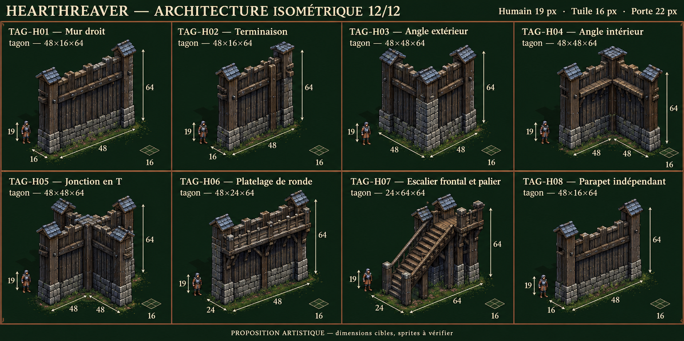
Télécharger la planche PNG · 8 références attendues
Identifiants et dimensions cibles
| ID | Fonction | Famille | L × P × H natives |
|---|
| TAG-H01 | Mur droit | tagon | 48 × 16 × 64 |
| TAG-H02 | Terminaison | tagon | 48 × 16 × 64 |
| TAG-H03 | Angle extérieur | tagon | 48 × 48 × 64 |
| TAG-H04 | Angle intérieur | tagon | 48 × 48 × 64 |
| TAG-H05 | Jonction en T | tagon | 48 × 48 × 64 |
| TAG-H06 | Platelage de ronde | tagon | 48 × 24 × 64 |
| TAG-H07 | Escalier frontal et palier | tagon | 24 × 64 × 64 |
| TAG-H08 | Parapet indépendant | tagon | 48 × 16 × 64 |